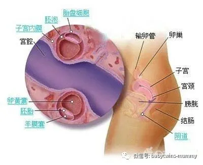
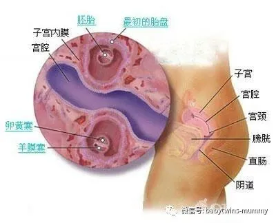
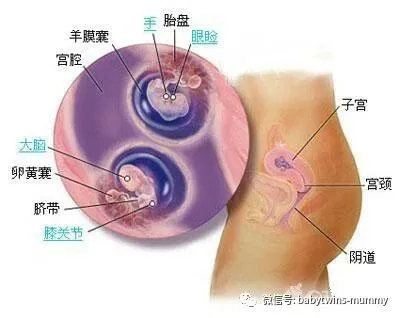
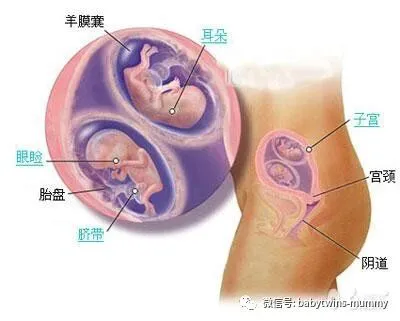
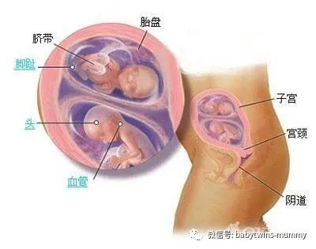
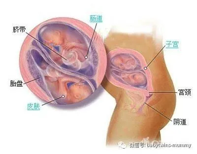
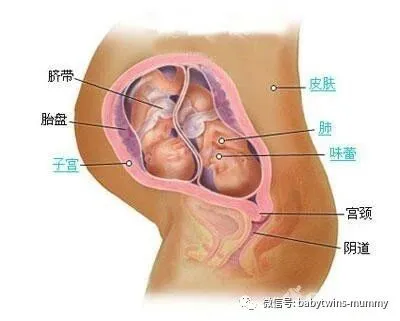
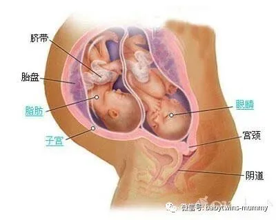
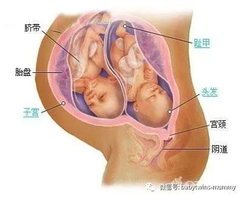
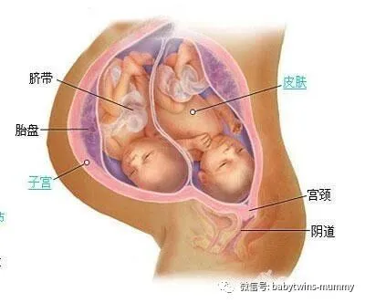

来这里找志同道合的小伙伴！
文|转载在网络 图|转载自网络
孖仔帮
美国著名医学插图画家佩格·格里蒂
用图画的方式带我们进入准妈妈的子宫，
通过以下 图片，
我们能亲眼目睹双胞胎宝宝从着床那一刻到准备出生的全过程。
图中的非同卵 双胞胎(也叫双卵双胞胎)是最常见的，
一个宝宝一个受精卵
双胞胎胎儿发育过程图-怀孕第3周
两个受精卵在孕3周时已经发育成两个叫做胚泡的、内有几百个细胞的球，并渐渐植入子宫内膜中.
01
温馨提示：双胎妊娠时早孕反应比较重，恶心呕吐不能进食，往往会发生代谢性酸中毒，需要请医生治疗才能好转。
01
圆圈妈经验：这个时候，我还不知道自己怀上了，居然还能一口气爬上了梧桐山！但大姨妈推迟了15天，偶尔觉得疲惫，有点怀疑是不是中招了。
双胞胎胎儿发育过程图-怀孕第4周
现在成为两个胚胎，由两层细胞组成，宝宝的所有器官和四肢都要由此发育。到下 周，两个胚胎会分别长出各自的羊膜囊和胎盘。
01
温馨提示：此时有些孕妇会出现腰酸腰疼的症状，日常要注意观察除了腹痛之外有没有阴道不规则出血，如有异常，需要及时就医。
01
圆圈妈经验：确定中招！第一次看到红色的双杠。故作镇定通知圆圈爸，电话那头半天没反应，估计是吓坏了。天知道才26岁的小男人，居然要当爸爸了。是有点接受不了的！此时，除了胃口变差，喜欢睡觉，其他一切正常。
双胞胎胎儿发育过程图-怀孕第8周
你的双胞胎在第八周已经长出能够弯曲的胳膊和腿了，他们的心脏都咚咚咚地跳了两周了，宝宝脑子里的神经细胞整向外伸展，互相连接
01
温馨提示：此时有些孕妇会出现腰酸腰疼的症状，日常要注意观察除了腹痛之外有没有阴道不规则出血，如有异常，需要及时就医。
01
圆圈妈经验：本来没什么反应的，吃了个把月的黄体酮之后，早孕反应剧烈。吃啥吐啥，没吃啥也要把黄疸水吐出来。第一次做B超，才知道是双胞胎。啊！恍然大悟，难怪早孕反应那么严重。
双胞胎胎儿发育过程图-怀孕第12周
两个宝宝正忙着踢啊伸啊，他们的双手现在能在胸前相交，小小的手指甲也开始长出 来了。可爱的眼皮遮着眼睛，牙床下的小牙蕾也往外冒了
01
温馨提示：由于双胞胎在子宫内同时生长往往难以维持到足月而提前分娩。因此，妈妈们应注意卧床休息
01
圆圈妈经验：可怕的早孕反应稍微缓解，开始预约产科建档。做第一次产检，由NT开始。
双胞胎胎儿发育过程图-怀孕第16周
两个双胞胎的指纹各不相同。他们会做鬼脸，斜着眼睛看，还开始往他们喝的羊水里尿尿。如果有条件，你从B超中可以看到他们的生殖器官。
01
温馨提示：我国孕期查看胎儿性别是违法的，其实不管男宝还是女宝只要是自己的孩子，都是恩赐，建议各位宝妈宝爸们不要太在意胎儿性别了。
01
圆圈妈经验：开始进入孕中期，胃口大开，开启疯狂吃喝的模式。肚子也比单胎的大，走路早已不能健步如飞了
双胞胎胎儿发育过程图-怀孕第20周
和你的两个宝宝说话吧，他们现在也许能听到你的声音。两个孩子的头上长头发了， 他们的皮肤上也长出了一层白白的油脂，用来保护自己长期浸泡在羊水中的身体
01
温馨提示：怀上双胞胎后，到了中后期孕妈妈的腹部便会胀大，早产的几率大大增加，所以休息的时间必须增加
01
圆圈妈经验：在北大医院做四维大排畸，第一次看到圆圈的样子。利用嚼舌妇的本领，套出宝宝性别。在莲花山的小石凳上跟圆圈爸，拿着四维的B超单，研究了很久，争执了很久。最后得出结论，比较像圆圈妈多一点。
双胞胎胎儿发育过程图-怀孕第24周
两个宝宝都长眉毛了，为乳牙和恒齿打基础的牙蕾已经长好，孩子的味蕾可能也发挥作用了。不管出生后是什么颜色，他们的皮肤现在都是红红的，皱皱巴巴的。
01
温馨提示：双胞胎孕妈妈罹患妊娠高血压的机会约为普通孕妇的4倍左右，所以一旦确认怀上双胞胎，你就得将跟医生的“约会”安排得更频繁和规律。
01
圆圈妈经验：经历了糖耐检测，从此以后对甜食细思巨恐，望而生畏！
双胞胎胎儿发育过程图-怀孕第28周
宝宝能把眼皮睁开了，眼睫毛也长好了。积聚在他们皮肤下面的脂肪层，使皮肤变得 越来越光滑。两个孩子都能吮吸手指，他们打嗝的时候，你也许能感觉到。
01
温馨提示：如果过早的阵痛不能停止，你的宝宝可能就会提早出生喽!
01
圆圈妈经验： 第一次做胎监，躺在那20分钟，度秒如年！那感觉就是一个巨大的西瓜压着只能平躺的你，而且你还不能破口大骂，且必须心平气和地深呼吸，吸气，呼气….
双胞胎胎儿发育过程图-怀孕第32周
两个宝宝的手指和脚趾上现在都长出指甲了。他们的胳膊、腿、躯体也都在长大。有 些宝宝甚至现在满头都是头发了。大多数宝宝都会在接下来的几周出生。也许能感觉 到。
01
温馨提示：如果怀了不只一个宝宝，特别是同卵双胎的情况下，出现流产的可能性会更大。
01
圆圈妈经验：肚子开始发紧发硬，下腹有下坠感。被圆圈爸五花大绑拖进了急诊室，从此开始保胎的日子！
双胞胎胎儿发育过程图-怀孕第36周
大部分宝宝都是36周出生，34周时，他们的肺已经发育完全了，在最后的几周里，两个宝宝的脂肪层仍在继续增厚，体重也在不停地增加。双胞胎新生儿的平均体重是2500克
01
温馨提示：双胞胎婴儿在产后更加需要时间进行特别护理。及时双胞胎宝宝十分健康，医生也会建议孕妈延长一点留院的时间，这样可以让孕妈更好的喂养护理宝宝。
01
圆圈妈经验：还在纠结是周一剖还是周三剖，圆圈周六的早上就踢破羊胎膜，破水了。然后就迫不及待地蹦出来了！当时距离36周还2天，距离37周足月还差9天.
作者简介：圆圈妈，资深屌丝女+腐女一枚，家有孖仔男两枚。
微信公众号ID：babytwins-mummy 孖仔帮
个人博客：双胞胎萌娃会（www.sgguy.com）
一个专注双胞胎群体的网站，面向家长，每天分享亲子养育知识
目前孖仔帮建立了微信群
孖仔帮双胞胎孕期群&孖仔帮双胞胎养育群
家长们可以根据需要进入任意一个群
想要进入孖仔帮的微信群
可以加圆圈妈的微信。
由圆圈妈邀请入群
欢迎加入双胞胎大家庭
让我们一起学习成长，快乐育儿！
↙点击下方“阅读原文”查看更多









